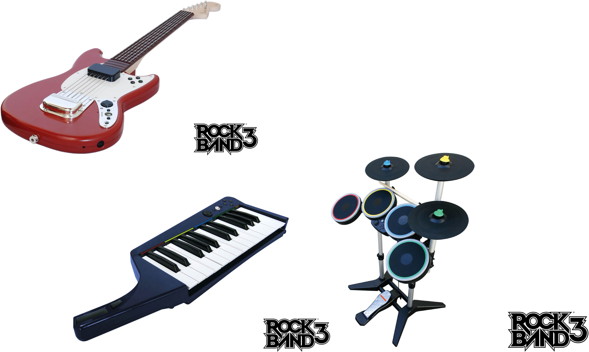

With such a short history, the place of video games in culture is constantly changing and being redefined. Are video games entertainment or art? Should they focus on fostering real-life skills or developing virtual realities? Certain games have come to prominence in recent years for their innovations and genre-expanding attributes. These games are notable for not only great economic success and popularity but also for having a visible influence on culture.
The musical series Guitar Hero, based on a Japanese arcade game of the late 1990s, was first launched in North America in 2005. In the game, the player uses a guitar-shaped controller to match the rhythms and notes of famous rock songs. The closer the player approximates the song, the better the score. This game introduced a new genre of games in which players simulate playing musical instruments. Rock Band, released in 2007, uses a similar format, including a microphone for singing, a drum set, and rhythm and bass guitars. These games are based on a similar premise as earlier rhythm-based games such as Dance Dance Revolution, in which players keep the rhythm on a dance pad. Dance Dance Revolution, which was introduced to North American audiences in 1999, was successful but not to the extent that the later band-oriented games were. In 2008, music-based games brought in an estimated $1.9 billion.
Figure 10.5
Rock Band includes a microphone and a drum set along with a guitar.
Guitar Hero and Rock Band brought new means of marketing and a kind of cross-media stimulus with them. The songs featured in the games experienced increased downloads and sales—as much as an 840 percent increase in some cases.Matt Peckham, Music Sales Rejuvenated by Rock Band, Guitar Hero,” PC World, December 22, 2008, http://www.washingtonpost.com/wp-dyn/content/article/2008/12/22/AR2008122200798.html. The potential of this type of game did not escape its developers or the music industry. Games dedicated solely to one band were developed, such as Guitar Hero: Aerosmith and The Beatles: Rock Band. These games were a mix of music documentary, greatest hits album, and game. They included footage from early concerts, interviews with band members, and, of course, songs that allowed users to play along. When Guitar Hero: Aerosmith was released, the band’s catalog experienced a 40 percent increase in sales.Denise Quan, “Is ‘Guitar Hero’ Saving Rock ’n’ Roll?” CNN, August 28, 2008, http://www.cnn.com/2008/SHOWBIZ/Music/08/20/videol.games.music/.
The rock band Metallica made its album Death Magnetic available for Guitar Hero III on the same day it was released as an album.Denise Quan, “Is ‘Guitar Hero’ Saving Rock ’n’ Roll?” CNN, August 28, 2008, http://www.cnn.com/2008/SHOWBIZ/Music/08/20/videol.games.music/. Other innovations include Rock Band Network, a means for bands and individuals to create versions of their own songs for Rock Band that can be downloaded for a fee. The sporadic history of the video game industry makes it unclear if this type of game will maintain market share or even maintain its popularity, but it has clearly opened new avenues of expression as a form of media.
The first game in the Grand Theft Auto (GTA) series was released in 1997 for the PC and Sony PlayStation. The game had players stealing cars—not surprising given its title—and committing a variety of crimes to achieve specific goals. The game’s extreme violence made it popular with players of the late 1990s, but its true draw was the variety of options that players could employ in the game. Specific narratives and goals could be pursued, but if players wanted to drive around and explore the city, they could do that as well. A large variety of cars, from sports cars to tractor trailers, were available depending on the player’s goals. The violence could likewise be taken to any extreme the player wished, including stealing cars, killing pedestrians, and engaging the police in a shoot-out. This type of game is known as a sandbox gameA video game in which the player chooses among a number of different objectives., or open world, and it is defined by the ability of users to freely pursue their own objectives.Ryan Donald, review of Grand Theft Auto (PlayStation), CNET, 28 April 2000, http://reviews.cnet.com/legacy-game-platforms/grand-theft-auto-playstation/4505-9882_7-30971409-2.html.
The GTA series has evolved over the past decade by increasing the realism, options, and explicit content of the first game. GTA III and GTA IV, as well as a number of spin-off games, such as the recent addition The Ballad of Gay Tony, have made the franchise more profitable and more controversial. These newer games have expanded on the idea of an open video game world, allowing players to have their characters buy and manage businesses, play unrelated mini-games (such as bowling and darts), and listen to a wide variety of in-game music, talk shows, and even television programs. However, increasing freedom also results in increasing controversy, as players can choose to solicit prostitutes, visit strip clubs, perform murder sprees, and assault law enforcement agents. Lawsuits have attempted to tie the games to real-life instances of violence, and GTA games are routinely the target of political investigations into video game violence. Tatiana Morales, “Grand Theft Auto Under Fire,” CBS News, July 14, 2005, http://www.cbsnews.com/stories/2005/07/13/earlyshow/living/parenting/main708794.shtml.
World of Warcraft (WoW), released in 2004, is a massively multiplayer online role-playing game (MMORPG) loosely based on the Warcraft strategy franchise of the 1990s. The game is conducted entirely online, though it is accessed through purchased software, and players purchase playing time. Each player chooses an avatar, or character, that belongs to one of several races, such as orcs, elves, and humans. These characters can spend their time on the game by completing quests, learning trades, or simply interacting with other characters. As characters gain experience, they obtain skills and earn virtual money. Players also choose whether they can attack other players without prior agreement by choosing a PvP (player versus player) serverA computer in a network that provides a service to other computers linked to it.. The normal server allows players to fight each other, but it can only be done if both players consent. A third server is reserved for those players who want to role-play, or act in character.
Various organizations have sprung up within the WoW universe. Guilds are groups that ascribe to specific codes of conduct and work together to complete tasks that cannot be accomplished by a lone individual. The guilds are organized by the players; they are not maintained by WoW developers. Each has its own unique identity and social rules, much like a college fraternity or social club. Voice communication technology allows players to speak to each other as they complete missions and increases the social bonding that holds such organizations together.Carson Barker, “Team Players: Guilds Take the Lonesome Gamer Out of Seclusion … Kind Of,” Austin Chronicle, July 28, 2006, http://www.austinchronicle.com/gyrobase/Issue/story?oid=oid%3A390551.
WoW has taken the medium of video games to unprecedented levels. Although series such as Grand Theft Auto allow players a great deal of freedom, everything done in the games was accounted for at some point. WoW, which depends on the actions of millions of players to drive the game, allows people to literally live their lives through a game. In the game, players can earn virtual gold by mining it, killing enemies, and killing other players. It takes a great deal of time to accumulate gold in this manner, so many wealthy players choose to buy this gold with actual dollars. This is technically against the rules of the game, but these rules are unenforceable. Entire real-world industries have developed from this trade in gold. Chinese companies employ workers, or “gold farmersPlayers in World of Warcraft who work to get virtual gold so that they can sell it for actual money.,” who work 10-hour shifts finding gold in WoW so that the company can sell it to clients. Other players make money by finding deals on virtual goods and then selling them for a profit. One WoW player even “traveled” to Asian servers to take advantage of cheap prices, conducting a virtual import–export business.Rowenna Davis, “Welcome to the New Gold Mines,” Guardian (London), March 5, 2009, http://www.guardian.co.uk/technology/2009/mar/05/virtual-world-china?intcmp=239.
The unlimited possibilities in such a game expand the idea of what a game is. It is obvious that an individual who buys a video game, takes it home, and plays it during his or her leisure is, in fact, playing a game. But if that person is a “gold farmer” doing repetitious tasks in a virtual world to make a real-world living, the situation is not as clear. WoW challenges conventional notions of what a game is by allowing the players to create their own goals. To some players, the goal may be to gain a high level for their character; others may be interested in role-playing, whereas others are focused on making a profit. This kind of flexibility leads to the development of scenarios never before encountered in game-play, such as the development of economic classes.
The Call of Duty series of first-person shooter games is notable for its record-breaking success in the video game market, generating more than $3 billion in retail sales through late 2009.Tom Ivan, “Call of Duty Series Tops 55 Million Sales,” Edge, November 27, 2009, http://www.edge-online.com/news/call-of-duty-series-tops-55-million-sales. Call of Duty: Modern Warfare 2 was released in 2009 to critical acclaim and a great deal of controversy. The game included a 5-minute sequence in which the player, as a CIA agent infiltrating a terrorist cell, takes part in a massacre of innocent civilians. The player was not required to shoot civilians and could skip the sequence if desired, but these options did not stop international attention and calls to ban the game.Games Radar, “The Decade in Gaming: The 10 Most Shocking Moments of the Decade,” December 29, 2009, http://www.gamesradar.com/f/the-10-most-shocking-game-moments-of-the-decade/a-20091221122845427051/p-2. Proponents of the series argue that Call of Duty has a Mature rating and is not meant to be played by minors. They also point out that the games are less violent than many modern movies. However, the debate has continued, escalating as far as the United Kingdom’s House of Commons.Games Radar, “The Decade in Gaming: The 10 Most Shocking Moments of the Decade,” December 29, 2009, http://www.gamesradar.com/f/the-10-most-shocking-game-moments-of-the-decade/a-20091221122845427051/p-2.
The Nintendo Wii, with its dedicated motion-sensitive controller, was sold starting in 2006. The company had attempted to implement similar controllers in the past, including the Power Glove in 1989, but it had never based an entire console around such a device. The Wii’s simple design was combined with basic games such as Wii Sports to appeal to previously untapped audiences. Wii Sports was included with purchase of the Wii console and served as a means to demonstrate the new technology. It included five games: baseball, bowling, boxing, tennis, and golf. Wii Sports created a way for group play without the need for familiarity with video games. It was closer to outdoor social games such as horseshoes or croquet than it was to Doom. There was also nothing objectionable about it: no violence, no in-your-face intensity—just a game that even older people could access and enjoy. Wii Bowling tournaments were sometimes organized by retirement communities, and many people found the game to be a new way to socialize with their friends and families.Dave Wischnowsky, “Wii Bowling Knocks Over Retirement Home,” Chicago Tribune, February 16, 2007, http://www.chicagotribune.com/news/local/chi-070216nintendo,0,2755896.story.
Wii Fit combined the previously incompatible terms “fitness” and “video games.” Using a touch-sensitive platform, players could do aerobics, strength training, and yoga. The game kept track of players’ weights, acting as a kind of virtual trainer.Matt Vella, “Wii Fit Puts the Fun in Fitness,” Business Week, May 21, 2008, http://www.businessweek.com/innovate/content/may2008/id20080520_180427.htm. Wii Fit used the potential of video games to create an interactive version of an exercise machine, replacing workout videos and other forms of fitness that had never before considered Nintendo a competitor. This kind of design used the inherent strengths of video games to create a new kind of experience.
Nintendo found most of its past success marketing to younger demographics with games that were less controversial than the 1990s first-person shooters. Wii Sports and Wii Fit saw Nintendo playing to its strengths and expanding on them with family-friendly games that encouraged multiple generations to use video games as a social platform. This campaign was so successful that it is being imitated by rival companies Sony and Microsoft, which have released the Sony PlayStation Move and the Microsoft Kinect.
Think about the ways in which the games from Section 10.2 "Influential Contemporary Games" were innovative and groundbreaking. Consider the following questions: